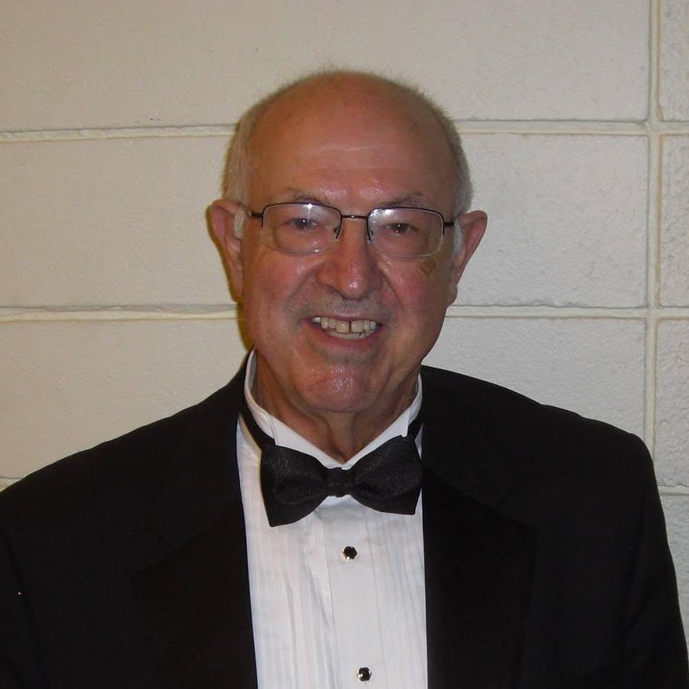
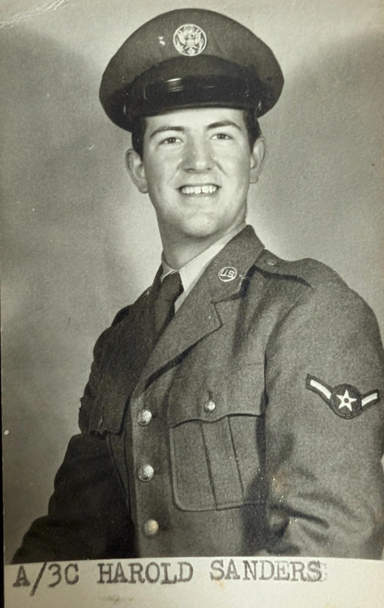
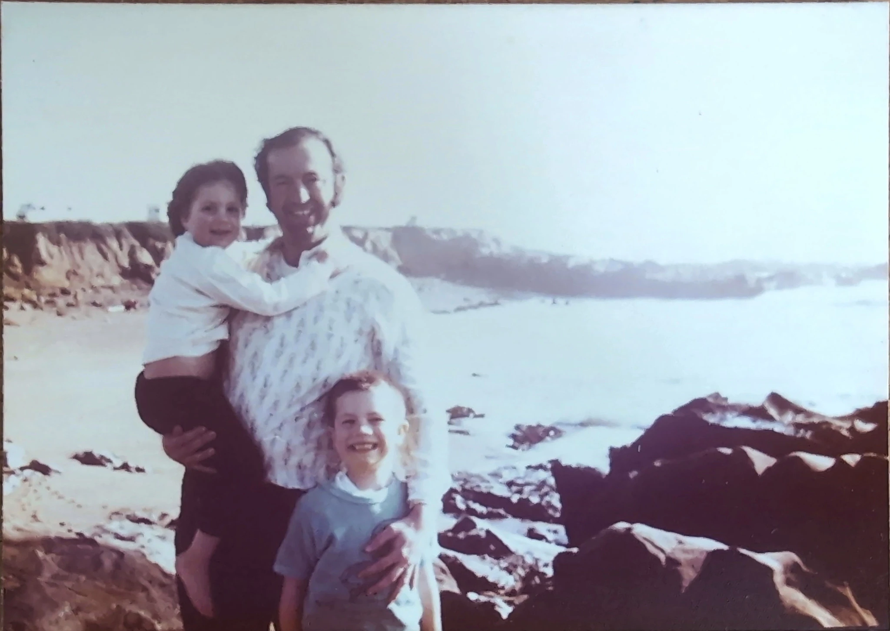
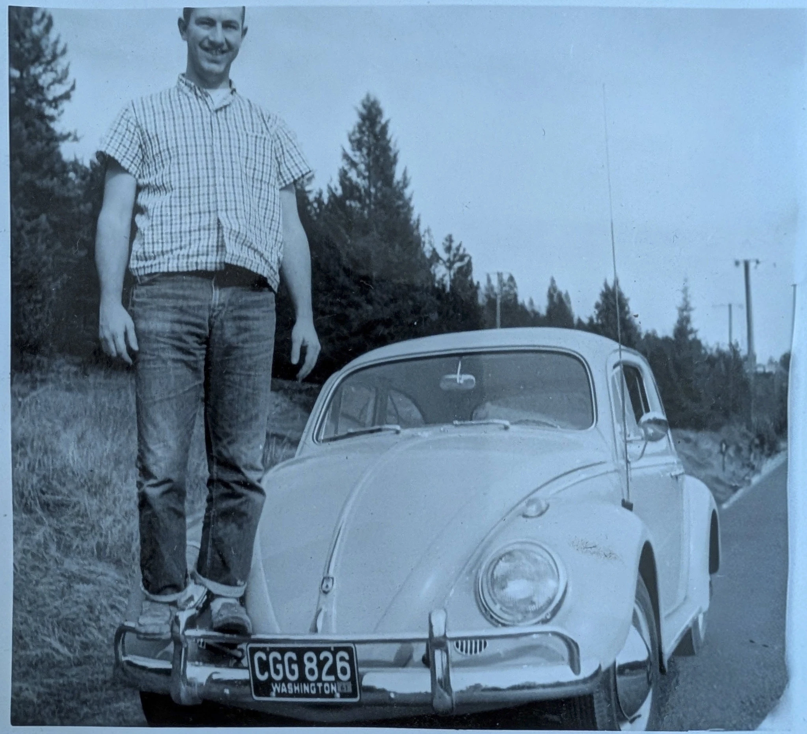
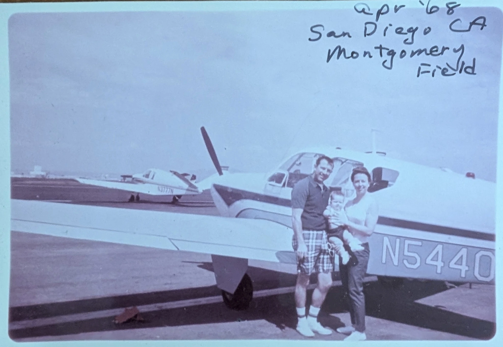
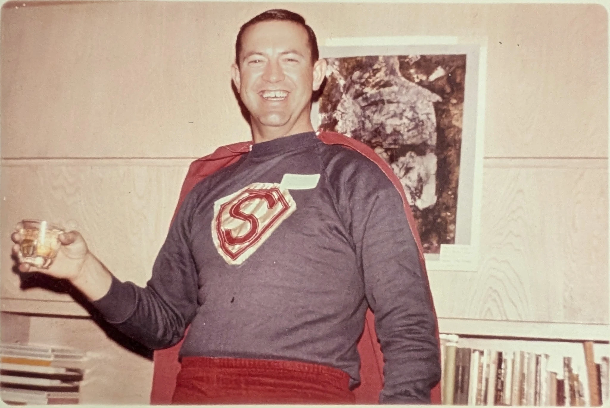
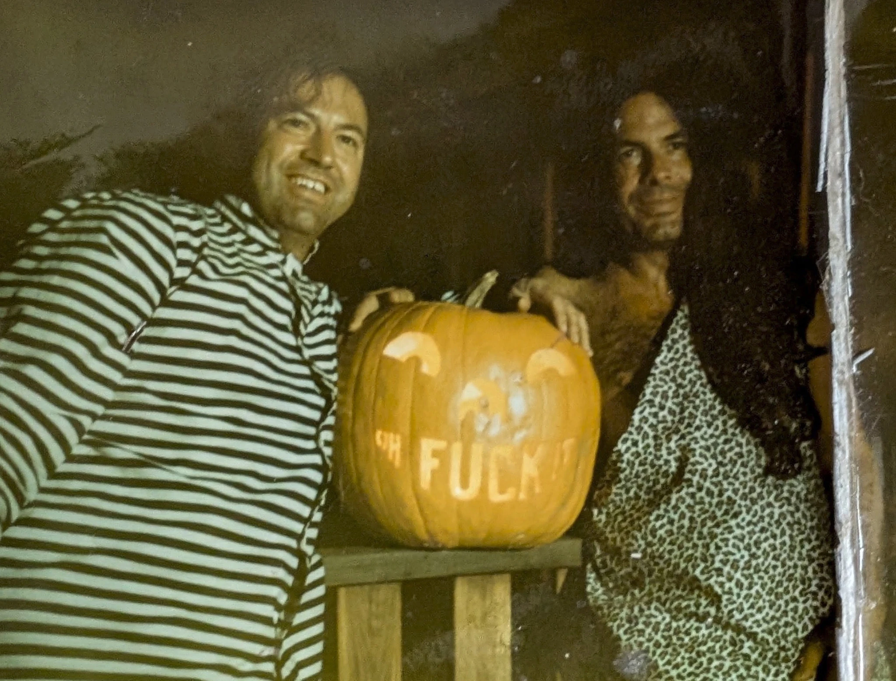

In loving memory
Harold “Hal”
Stanley Sanders
October 27, 1935 – November 2, 2026

Blessed with a razor-sharp humor, an encyclopedic memory of jokes, and a passion for dancing, Hal knew how to bring a room to life. He had an anecdote chambered for any occasion and never forgot a punchline. Harold Stanley Sanders, 91, of Sunnyvale, California, died in San Anselmo, California, on November 2, 2026.
He was born in Mountain View, Arkansas, on October 27, 1935, to Raymond and Mary Sanders, who worked hard to raise him along with his brother John and sister Alice (aka Erlene). Seeking better farming opportunities, the family moved to Washington state’s Yakima Valley where they raised apples and pears.

He attended high school in or near Naches, Washington, before graduating and joining the Air Force in 1953. He was drawn to the Air Force to be around airplanes, although he mostly worked on radar equipment, and obtained the rank of Airman 4. After four years in the Air Force he attended Washington State College (now Washington State University) in Pullman and obtained a master’s degree in electrical engineering.
Like many of his generation, he got married, had children, then divorced. In the late 1960s he and his father-in-law built a family home in Los Trancos Woods, California.


Hal was exceptionally adept at electrical engineering and cultivated his skills at companies such as General Dynamics, Jet Propulsion Laboratory and Philco/Ford, before starting and running his own R&D and manufacturing business, Sanders Instruments, Inc., renamed Nusan Corporation. He subsequently worked at Xilinx among other Silicon Valley companies before officially retiring.
Everyone who knew Hal knew how much he loved skiing (snow and water), aviation, music and dancing. He obtained his private pilot’s license and flew friends and family around North America. He owned several airplanes at various times, including a Mooney M20, a Piper Archer, a Beechcraft Bonanza, and a twin-engine Piper Seneca. When not in the air, he could be found on the dance floor leading advanced square dance and ballroom steps.



He is survived by his son, Steven Sanders, grandson, Zachary Sanders, and daughter, Susan Sanders, and predeceased by his brother, John Sanders, and sister, Alice Erlene Carter.
A private memorial service was held by the family. The family wishes to thank the Veterans Administration and Stanford Medicine Cancer Center for their care and compassion. In lieu of flowers, donations may be made to the staff holiday fund at Bello Gardens in San Anselno in Hal’s memory.
In accordance with what the family believes would be his final wishes, his favorite limerick is shared here:
There once was a fellow named Clyde,
Who fell in an outhouse and died.
And also his brother,
Who fell in another,
And now they’re interred side by side
More memories of Hal
Additional family photographs and videos will be shared here as they become available.